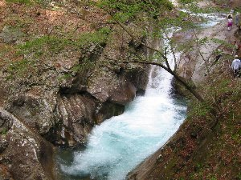
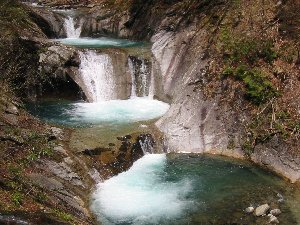

山梨県西沢渓谷 | ２００３年５月３〜４日 |
|---|---|
 こんな川辺を歩きます |  とにかく水が綺麗 |
| 山梨県三富村にある西沢渓谷に行ってきました。三富村は群馬県との県境に近く、雁坂トンネルの手前です。 西沢渓谷に行こうと決めたのは、当日友人の車に乗ってから。 友人とどこか山の方に行こうと思い車で出発。車内にあった「日本の滝1000選」という写真集から七ツ釜五段の滝見て決めました。 ゴールデンウィークなので道が何処も、かしこも混んでいました。三富村についたのは既に午後２時をまわっていました。 道の駅「みとみ」でハイキングコースをみて、時間的にゆっくり出来ないことが分かり、この日のハイキングをあきらめました。 温泉に入って、「イノブタ料理」と言う看板に惹かれ「民芸茶屋清水」へ。名物と書いてある「イノブタ溶岩焼き」と「ほうとう」を注文。 ここで知ったのですが、この「イノブタ溶岩焼き」は「美味しんぼ」80巻にも掲載されている名物料理だそうです。 イノブタとは猪と豚の合いの子だそうで、溶岩焼きとは富士山の溶岩石を板状にして、それを下から火であぶり鉄板代わりに焼くというものです。 これが旨い！！ 名物ほうとうも以前他の店で食べたものより遥かに旨い！もーおなか一杯です。 満腹になったら、今夜の宿「土手の上に張ったテント」へ。酒を飲みながら就寝。 | |
|  貞泉の滝 |  単なる段差 |
| 次の日、い〜天気の中、無料駐車場に車を置いて出発です。 出発してから30分くらいでしょうか、最初の滝は「大久保の滝」です。ちょっと遠めです。 そこから川沿いを歩き、次々と大小さまざまな滝が見えてきます。 「貞泉の滝」これは感動しました。まさに滝壷って感じの所に、水が怒涛のごとく流れ落ちる様は圧巻です。 この様な滝が川沿いに続き、目を楽しませてくれます。 名所なので人が多く、ハイキングコースは混雑しています。ただ、基本的に一方通行みたいなので、大変というイメージはありません。 最後に目的地を決定させた、「七ツ釜五段の滝」があります。ここはその名の通り、滝が段々になって、一つ一つが釜のように丸くなっています。それが七つぐらいあるんですね。 水は青く清涼な感じが出ていてGOOD！です。新緑はもうちょっと、という感じでした。新緑にこの水は映えるだろうな〜 帰り道は昔の材木をトロッコで運んだレールのうえを歩いていきます。アップダウンが少なく歩きやすいです。 三富村役場（西沢渓谷地図有り） http://www.vill.mitomi.yamanashi.jp/ 静岡に帰る途中、勝沼町の「白百合醸造」でワインを購入。購入したワインは「勝沼甲州」の白ワインで、美味しんぼ80巻にも登場しているやつです。 試飲したけど美味しいですよ。なんか美味しんぼの旅になってしまった。 白百合醸造 http://www.wine.or.jp/shirayuri/ | |
|  七ツ釜五段の滝 |  帰りの道 |